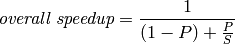
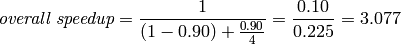
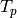
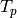
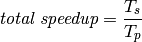
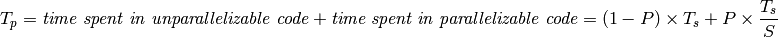
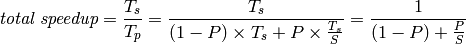

Parallel Speedup¶
Introduction¶
The speedup of a parallel algorithm over a corresponding sequential algorithm is the ratio of the compute time for the sequential algorithm to the time for the parallel algorithm. If the speedup factor is n, then we say we have n-fold speedup. For example, if a sequential algorithm requires 10 min of compute time and a corresponding parallel algorithm requires 2 min, we say that there is 5-fold speedup.
The observed speedup depends on all implementation factors. For example, more processors often leads to more speedup; also, if other programs are running on the processors at the same time as a program implementing a parallel algorithm, those other programs may reduce the speedup. Even if a problem is embarrassingly parallel, one seldom actually obtains n-fold speedup when using n-fold processors. There are a couple of explanations for this occurrence:
- There is often overhead involved in a computation. For example, in the solar system computation, results need to be copied across the network upon every iteration. This communication is essential to the algorithm, yet the time spend on this communication does not directly compute more solutions to the n-body problem. In general, communication costs are frequent contributors to overhead. The processing time to schedule and dispatch processes also leads to overhead.
- trues occur when a process must wait for another process to deliver computing resources. For example, after each computer in the solar system computation delivers the results of its iteration, it must wait to receive the updated values for other planets before beginning its next iteration.
- Some parts of a computation may be inherently sequential. In the polar ice example, only the matrix computation was parallelized, and other parts gained in performance only because they were performed on faster hardware and software (on a single computer)
On rare occasions, using n processors may lead to more than an n-fold speedup. For example, if a computation involves a large data set that does not fit into the main memory of a single computer, but does fit into the collective main memories of n computers, and if an embarrassingly parallel implementation requires only proportional portions of the data, then the parallel computation involving n computers may run more than n times as fast because disk accesses can be replaced by main-memory accesses.
Replacing main-memory accesses by cache accesses could have a similar effect. Also, parallel pruning in a backtracking algorithm could make it possible for one process to avoid an unnecessary computation because of the prior work of another process.
Amdahl’s Law¶
Amdahl’s Law is a formula for estimating the maximum speedup from an algorithm that is part sequential and part parallel. The search for 2k-digit primes illustrates this kind of problem: First, we create a list of all k-digit primes, using a sequential sieve strategy; then we check 2k-digit random numbers in parallel until we find a prime.
The Amdahl’s Law formula is

- P is the time proportion of the algorithm that can be parallelized.
- S is the speedup factor for that portion of the algorithm due to parallelization.
For example, suppose that we use our strategy to search for primes using 4 processors, and that 90% of the running time is spent checking 2k-digit random numbers for primality (after an initial 10% of the running time computing a list of k-digit primes). Then P = .90 and S = 4 (for 4-fold speedup). According to Amdahl’s Law,

This estimates that we will obtain about 3-fold speedup by using 4-fold parallelism.
Note
- Amdahl’s Law computes the overall speedup, taking into account that the sequential portion of the algorithm has no speedup, but the parallel portion of the algorithm has speedup S.
- It may seem surprising that we obtain only 3-fold overall speedup when 90% of the algorithm achieves 4-fold speedup. This is a lesson of Amdahl’s Law: the non-parallelizable portion of the algorithm has a disproportionate effect on the overall speedup.
- A non-computational example may help explain this effect. Suppose that a team of four students is producing a report, together with an executive summary, where the main body of the report requires 8 hours to write, and the executive summary requires one hour to write and must have a single author (representing a sequential task). If only one person wrote the entire report, it would require 9 hours. But if the four students each write 1/4 of the body of the report (2 hours, in 4-fold parallelism), then one student writes the summary, then the elapsed time would be 3 hours—for a 3-fold overall speedup. The sequential portion of the task has a disproportionate effect because the other three students have nothing to do during that portion of the task.
A short computation shows why Amdahl’s Law is true.
- Let
 be the compute time without parallelism, and  the compute time with parallelism. Then, the speedup due to parallelism is
be the compute time without parallelism, and  the compute time with parallelism. Then, the speedup due to parallelism is

- The value P in Amdahl’s Law is the proportion of that can be parallelized, a number between 0 and 1. Then, the proportion of that cannot be parallelized is 1-P.
- This means that

- We conclude that
